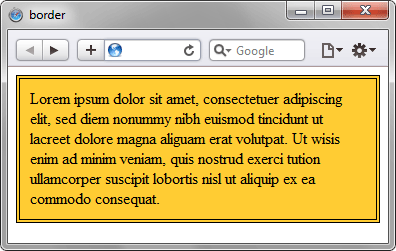

Универсальное свойство border позволяет одновременно установить толщину, стиль и цвет границы вокруг элемента. Значения могут идти в любом порядке, разделяясь пробелом, браузер сам определит, какое из них соответствует нужному свойству. Для установки границы только на определенных сторонах элемента, воспользуйтесь свойствами border-top, border-bottom, border-left, border-right.
Синтаксис
border: [border-width||border-style||border-color] | inherit
Если вам нужно указать
какую-то определенную сторону,
можно использовать свойства:
border-left,
border-right,
border-bottom
и border-top.
Для них точно так же
можно задавать цвет,
толщину,
стиль линии
и другие параметры.
Например,
вы можете сделать
абсолютное безумие
с оформлением границ!
Пример такого эксперимента
приведён ниже.
Пример эксперимента:
<!DOCTYPE html>
<html>
<head>
<meta charset="utf-8">
<title>border madness</title>
<style>
.box {
width: 350px;
padding: 20px;
margin: 40px auto;
background: #fff4cc;
color: #222;
font-size: 18px;
border-top:
8px dotted hotpink;
border-right:
14px double lime;
border-bottom:
10px dashed cyan;
border-left:
18px groove orange;
border-radius: 20px;
}
</style>
</head>
<body>
<div class="box">
Здесь происходит
настоящее безумие
с border-свойствами!
</div>
</body>
</html>
Результат использования
разных стилей, цветов
и размеров границ
показан на рисунке ниже.
Значение border-width определяет толщину границы. Для управления ее видом предоставляется несколько значений border-style. Их названия и результат действия представлен на рис. 1.
border-color устанавливает цвет границы, значение может быть в любом допустимом для CSS формате.
inherit наследует значение родителя.
Пример:
<!DOCTYPE html>
<html>
<head>
<meta charset="utf-8">
<title>background-size</title>
<style>
div {
height: 200px; /* Высота блока */
border: 2px solid #000; /* Параметры рамки */
background:
url(images/mybg.png)
100% 100%
no-repeat;
background-size: cover;
}
</style>
</head>
<body>
<div>...</div>
</body>
</html>
В данном примере вокруг слоя добавляется двойная граница. Результат показан на рис. 2.
